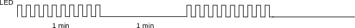

Entrega¶
| Pasta |
|---|
Labs/TC-RTC-IRQ/ |
- Parte 1:
- Entra em sleep mode
- Led pisca mais rápido
- Pisca Pisca
- Parte 2:
- Corrigido uso de flag para parar o pisca pisca
- Usar placa OLED
- Para cada LED um TC diferente
- Cada LED é controlado por um botão
- Exibir hora atual no OLED1
Entenda o código¶
O firmware disponível no repositório de exemplos chamado de TC-RTC-IRQ configura o TimerCounter (TC) e o RTC do mircontrolador. O TC0 canal 1 é configurado para gerar uma interrupção (TC1_Handler) a cada 250ms (f=1/T -> de 4Hz) já o RTC é configurado para operar em modo de alarme, gerando uma interrupção (RTC_Handler) em um determinado momento. Inicialmente o RTC está configurado para gerar uma interrupção um minuto após o início do microcontrolador.
O TimerCounter faz com o o led pisque na frequência de 4Hz enquanto não ocorrer o alarme do RTC, após o acontecimento do alarme (interrupção do RTC) o piscar do led é desligado.

Entenda e execute
- Copie esse exemplo para a pasta do seu repositório.
- Leia o README) desse exemplo!
- Execute o exemplo na placa!
- Responda:
- Quais periféricos são utilizados?
- O que o firmware faz?
- Quantas interrupções são usada, quais são elas?
Programando...¶
Vamos agora trabalhar com o código exemplo, modificando e incorporando novas funcionalidades.
Nesse laboratório, não é permitido utilizar funções de delay por software: delay_s() / delay_ms() / ...
1. Sleep¶
Modifique e teste
Faça o exemplo fazendo com o que o uC entre em modo sleep enquanto estiver ocioso.
Para isso utilize a função pmc_sleep(..):
// trecho de codigo a ser executado antes de dormir
// ...
// entra em sleep
pmc_sleep(SAM_PM_SMODE_SLEEP_WFI);
// trecho de codigo a ser executado depois de acordar
// ...
O modo Wait for Interrupt WFI é um dos modos de powersave mais básicos e menos eficientes do SAME70. Nele o CORE ainda é mantido energizado porém sem clock. A grande vantagem desse modo é que qualquer interrupção pode acordar o core, diferente de outros modos mais agressivos que desabilita complemente o CORE implicando em um menor gasto energético.
Toda vez que essa função for chamada o CORE entrará em modo sleep e ficará "bloqueada" esperando por alguma interrupção. Após detectada a interrupção, o CORE irá acordar e resolver todas as interrupções que estão pendentes e então irá liberar essa função, ou seja, continuará a executar o código.
2. Mais rápido !¶
Modifique e teste
Faça com que o LED pisque ainda mais rápido! Escolha uma frequência que achar adequado.
3. Piscar durante 1 minuto e parar durante 1 minuto - cíclico¶
Modifique e teste
Faça com que o led pisque durante um minuto e fique um minuto sem piscar eternamente, faça isso de forma cíclica como na ilustração a baixo:

Dicas: - Use o alarme do RTC para isso! - Cuidado ao mudar de Hora/ Dia/ Mês
4. Flag é a melhor maneira ?¶
A tomada de decisão se o LED está em modo "pisca pisca" é feita por uma variável global flag_led0:
/************************************************************************/
/* VAR globais */
/************************************************************************/
uint8_t flag_led0 = 1;
Dentro da interrupção do TC1 verificamos a flag:
void TC1_Handler(void){
....
/** Muda o estado do LED */
if(flag_led0)
pin_toggle(LED_PIO, LED_PIN_MASK);
O problema aqui é que a interrupção do TC1 continua ocorrendo mesmo com o piscar do LED desativado, o que pode ter um impacto no consumo e performance do projeto.
Modifique e teste
Proponha e implemente uma solução para essa questão.
5. Várias frequências¶
Modifique e teste
Utilizando a placa OLED1 conectada ao kit de desenvolvimento, faça com que cada LED pisque nas frequências determinadas na tabela a baixo, utilize para cada LED um TC diferente.
| LED OLED1 | Frequência (Hz) |
|---|---|
| LED 1 | 8 |
| LED 2 | 11 |
| LED 3 | 17 |
6. Botões¶
Modifique e teste
Faça com que os botões (relacionados a cada LED) pare ou inicialize o piscar dos LEDs, utilize para isso interrupção do PIO.
- Não use flags para isso!
7. OLED1 - Exibir hora¶
Modifique e teste
Utilize o OLED1 para exibir a hora atual no display!
- Dica:
- Ative a interrupção de segundos do RTC (além da de alarme)
- No handler, verifique o motivo de entrar na interrupção
- Trabalhe com flags, atualize o LCD no
while(1){}
Para verificar se a interrupção foi referente a segundos (precisa ativar antes!):
``` // Second increment interrupt if ((ul_status & RTC_SR_SEC) == RTC_SR_SEC) { / limpa interrupcao segundos / rtc_clear_status(RTC, RTC_SCCR_SECCLR); }
```